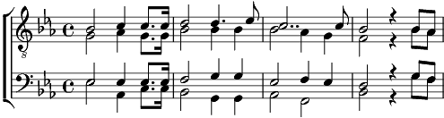

Ô petit pays
Mib majeur
Paroles: Gonzague De Reynold
Musique: Carlo Hemmerling

O petit pays dont je suis le fils
Sais-tu bien quel est mon grand amour,
Sais-tu bien quel est mon grand amour,
O petit pays?
Car je t’aime et pour toi chaque jour
Je travaille et je chante et je vis
Car je t’aime et pour toi chaque jour
Je travaille et je chante et je vis.
Mon amour pour toi me remplit d’émoi, me remplit d’émoi
Mon cœur bat à la fraîcheur de l’air
Prends mon cœur et mon sang et ma chair
Prends mon cœur et mon sang et ma chair
Je te rends tout ce que je te dois, tout ce que je te dois
O petit pays
Quand l’heure viendra, on me chantera
Tes vieux airs qui font douce la mort
Et j’irai comme un enfant s’endort
Vers un ciel qui te ressemblera,
Vers un ciel qui te ressemblera.